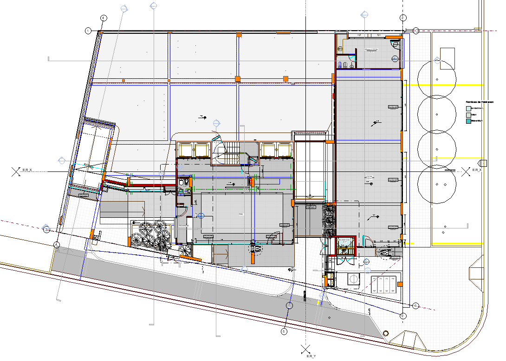
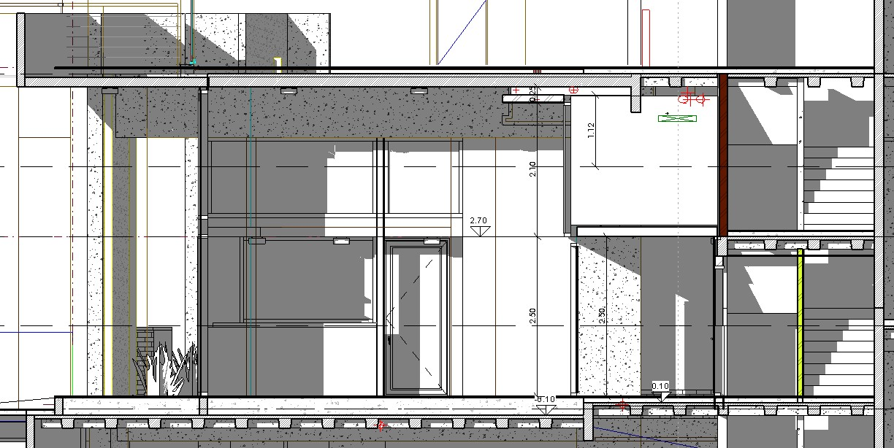
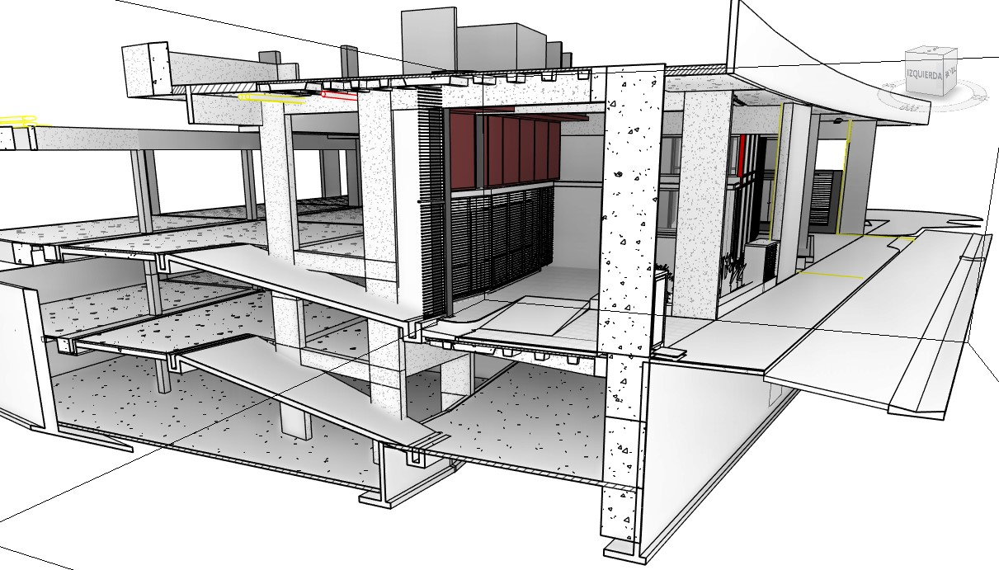
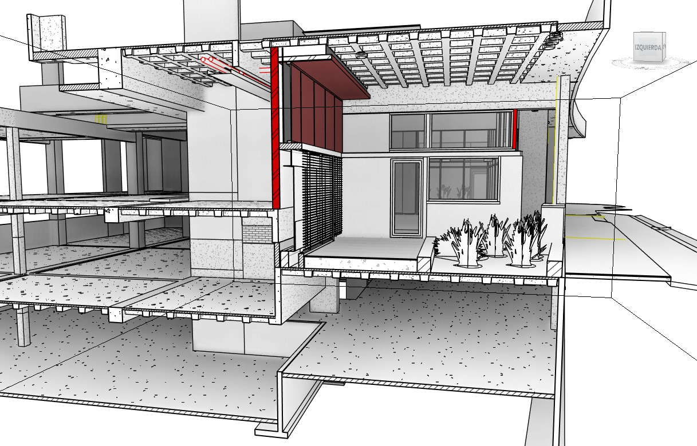
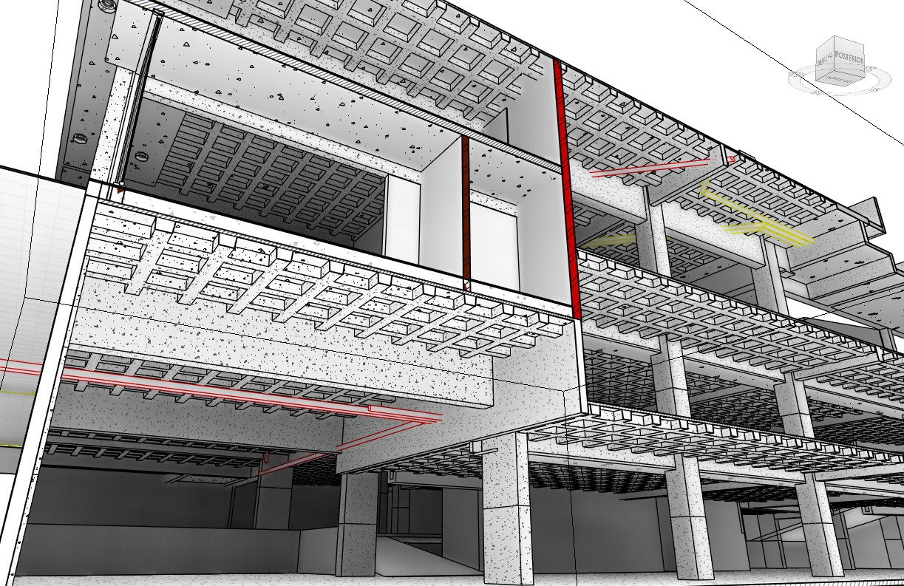
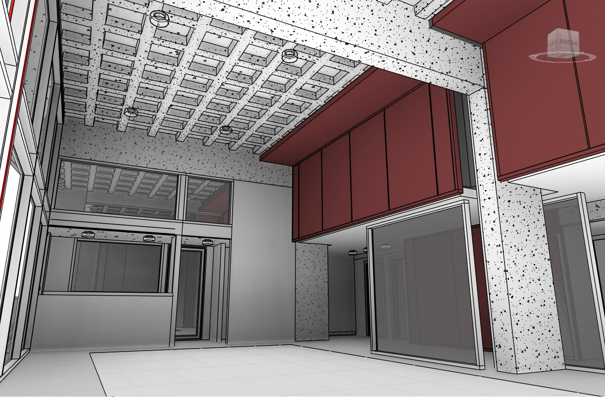
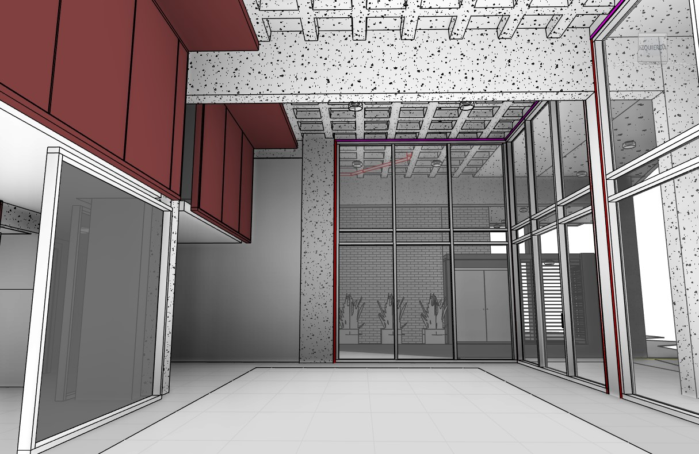

Plantas según niveles
En este caso el modelado Revit sirvió para defir el diseño de Planta Baja de un edificio con su estructura ya ejecutada.

Tener los niveles en orden permite lograr visualizar el modelo en cada uno de los sectores que imaginemos.
Tener a la vista las diferentes opciones de diseño permiten evaluarlas teniendo la totalidad del modelo como "telón de fondo".
Secciones
En un principio sirven durante el proceso de modelado

Las mismas se van corriendo para definir distintos sectores del modelo
Secciones 3d con box
Te permiten visulizar sectores mas acotados y manipular el punto de vista

Cambiando el tamaño de la seccion box podés ir moviendote por otros sectores siempre en seccion vertical u horizontal

Previsualizando interferencias con la estructura o cañerias de instalaciones


Veo interferencias desde abajo

Armado de Detalles
Puedo aislar sectores para trabajar en detalle

Los puedo detallar en Laminas combinando la info grafica


Detalle de espacios
En un principio sirven durante el proceso de modelado


Puedo ver el espacio en detalle
Detalle de un sector aislado mediante section box
Con el elemento aislado en una caja de sección, se puede
ver todos los componentes que rodean el mismo. Ampliar el tamaño del section box